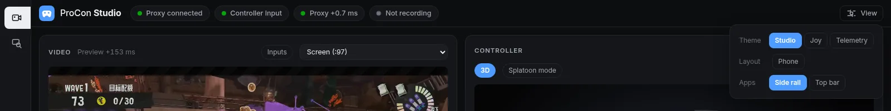
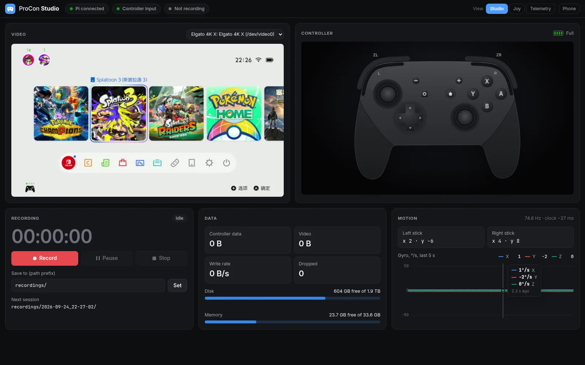
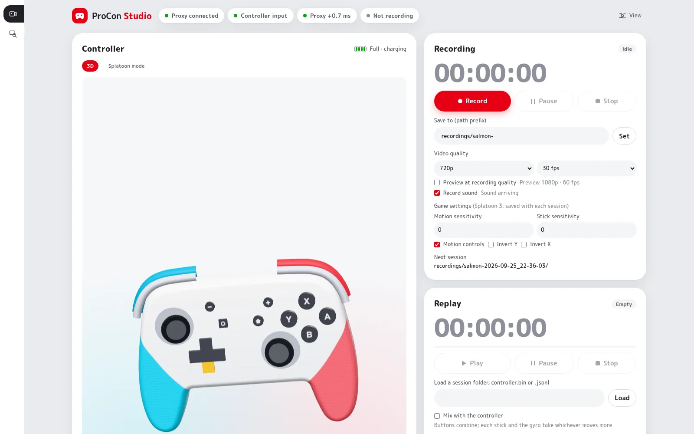
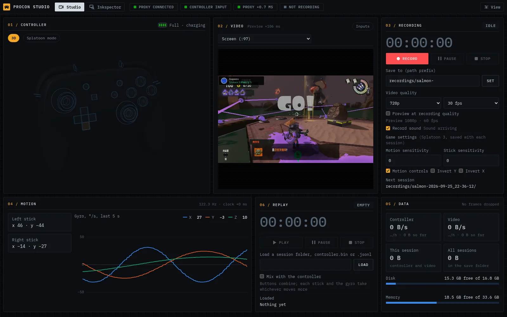
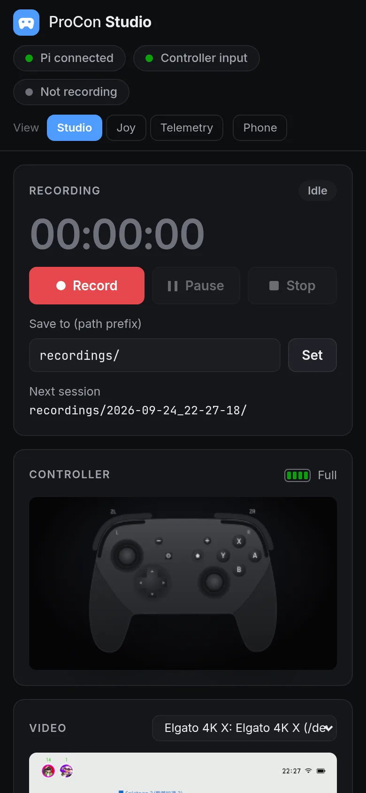
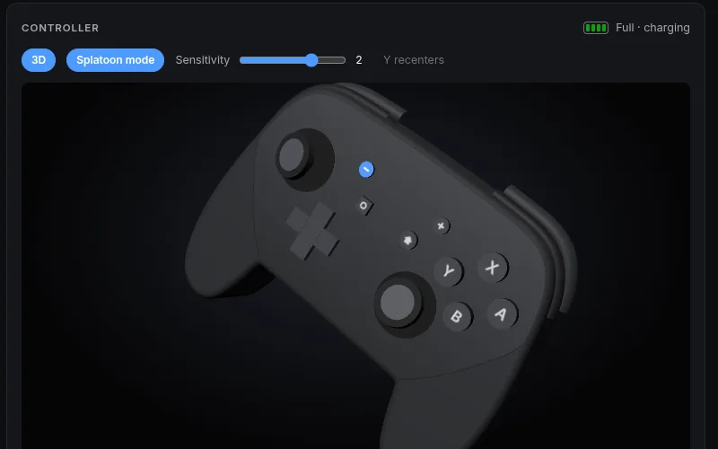
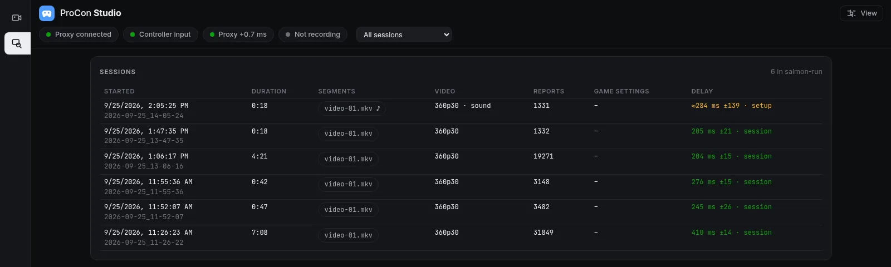
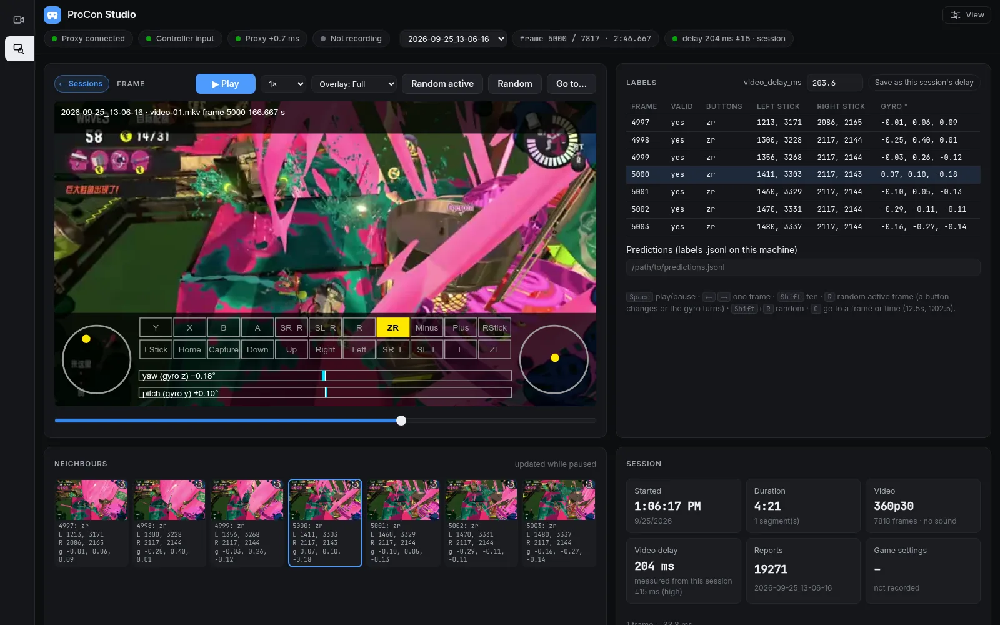

ProCon Studio
Play Switch games as usual while every button press, stick and gyro sample is timestamped and recorded next to the console's video and sound, ready to train a model that predicts the next move from what is on screen.
Five pieces of hardware, three kinds of cable
The Raspberry Pi sits between the controller and the console. The Switch sees an ordinary wired Pro Controller. The PC watches the video through a capture card and runs the studio.
Pro Controller
Plugged into the Pi by USB instead of pairing with the console.
Raspberry Pi 4B
Runs procon-proxy. Its USB-C port runs in gadget mode
and presents itself to the Switch as a Pro Controller, forwarding
reports both ways, rumble included. It resets the controller at
start so it talks over USB, not Bluetooth. Any board with a USB
device port works.
Nintendo Switch 2
Docked, with its HDMI output going into the capture card.
Elgato 4K X
A standard V4L2 device on Linux. Captured as YUYV 1920×1080 at 60 fps, the same mode OBS used; its sound comes through PulseAudio.
Linux PC
Runs procon, the studio: the dashboard, ffmpeg
capture with NVENC, and the recorded sessions. It also
cross-compiles and deploys the proxy.
From a button press to a training sample
-
The Pi reads a report from the controller.
A high-priority thread reads each 64-byte input report, stamps it with the Pi's clock and a sequence number, and forwards it to the Switch, noting how long the Switch took to accept it. Rumble and other commands from the Switch go the other way on a thread of their own, so they never hold input up.
-
The frame streams to the PC.
A background thread sends the 80-byte frame over TCP port 7331. When the controller is quiet it sends a heartbeat every second, so the studio can tell an idle controller from a dead link. Gaps in the sequence numbers count as dropped frames.
-
The studio lines up both clocks.
For each frame the PC compares its own clock with the Pi's timestamp and keeps the lowest difference over 10 seconds. That estimate of the clock offset, which includes the shortest network delay seen (a few milliseconds over Wi-Fi), is shown live and saved with every session.
-
ffmpeg records the video.
One ffmpeg process holds the capture card and hands raw 1080p frames to the studio, each with the time the card delivered it. A second encodes them into a low-latency H.264 preview that the dashboard plays in a video element, and Record starts a third that encodes the recording at a constant frame rate. Settings changes restart only the encoders, and video begins with the next frame after Record. The card's sound is read all the time, so a recording's sound track starts with its first frame.
-
A session folder holds everything.
Controller frames, one video file with sound per stretch between pauses, and a
session.jsonwith the numbers needed to align them and the game's control settings. -
Frames and inputs become training samples.
crates/gameplay-dataputs both on one clock and sums the controller over each video frame, allowing for the game's own delay from input to picture. The training code uses it from Python, and the Inkspector shows the same labels over the recorded frames.
One page to watch, record and check
The dashboard runs on the PC and opens in any browser on the
network. It holds two apps, switched without reloading:
Studio to watch and record, and
Inkspector to check what was recorded. The app
links sit in a rail on the left or in the top bar, and the status
chips stay in view in both. The screenshots come from a test studio
whose video input is a screen playing a recorded Salmon Run match,
with the synthetic controller from fake_proxy.





Record, pause, stop
Type a path prefix such as /data/procon/mk8- and each
recording gets its own folder named with the date and time. The
page shows the next folder name before you start.
Pick the video
The capture card, the PC's screen, or no video, and the recorded size and frame rate (1080p60 down to 360p10) to keep files small. Settings are saved, so a restart comes back the way you left it.
Sound and game settings
The capture card's sound goes into each video file as a second track. The game's control settings (Splatoon 3 sensitivities, motion controls, inverted axes) are saved with every session.
Know the disk is fine
Controller and video sizes, write rate, free disk space with the hours left at the current rate, free memory, and dropped frames.
See the link health
Chips for the Pi connection, controller input and the time a report spends in the proxy; the input rate and the Pi clock offset, which should stay within a few milliseconds.
Watch the motion
A 3D Pro Controller that lights up every button and tilts its sticks, stick positions, and a live five-second gyro chart with a hover readout.
Replay actions
Play a session, a controller.bin or a model's
.jsonl of actions to the Switch through the Pi,
instead of the controller or mixed with it, to see what a model
would do.
Splatoon mode
The default view tilts with how fast the controller turns and springs back when it stops. Splatoon mode tracks the real pose instead: the PC integrates the gyro on every report and uses gravity from the accelerometer to keep the tilt honest. Stand the controller on its side and the model stays there. Press Y to flatten it again, as in the game. The sensitivity slider scales the motion from a quarter to four times the real angle.

Check every frame's labels
The Inkspector lists the recorded sessions and steps through one frame by frame, with the controller labels a model would learn from drawn over the picture. It reads sessions with the same code as the training side, so what it shows is what the model gets.


Step, play and jump
Space plays at 0.25× to 1× with the segment's sound, the arrows step one frame (ten with Shift), R jumps to a random frame where a button changes or the gyro turns, and G goes to a frame or time. The URL keeps the place.
Line up the delay
The game shows an input some 200 to 400 ms later. Each session's delay comes from the calibration file: set by hand, measured from the session, or the delay of its setup. Change it to check by eye, and save it as the session's delay.
Compare predictions
Point it at a model's labels file and each cell shows the truth over the prediction, with differences in red.
What one session looks like
mk8-2026-09-24_21-48-23/
├── controller.bin 80-byte frames, one per controller report
├── video-01.mkv H.264 + Opus sound, until the first pause
├── video-02.mkv after resuming
└── session.json start/stop times, clock offset, dropped frames,
video size and rate, each file's first-frame time,
game settings
To line things up: video frames come at a constant rate, so frame
n of a file was captured at its
start_unix_ms plus n /
video.fps seconds. A controller frame's time on the PC is
its proxy timestamp plus proxy.clock_offset_ms. The game
adds its own delay from input to picture on top, so the frame at video
time t shows the input from t −
video_delay_ms. fwd is how long the report
took from the controller to the Switch.
Two commands, both on the PC
# Cross-compile procon-proxy, copy it with proxy.toml to the Pi, restart it ./scripts/deploy.sh pi4 # Start the studio, then open http://<pc>:8090 for the Studio and Inkspector ./scripts/run.sh